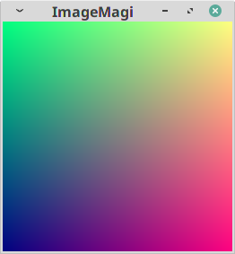
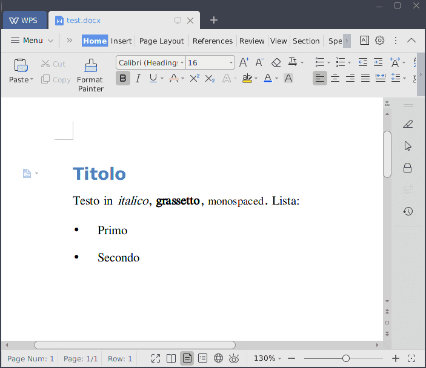

Esercitazione 3
Calcolo numerico per la generazione di immagini fotorealistiche
Maurizio Tomasi maurizio.tomasi@unimi.it
Scrittura/lettura di file
Accesso ai file
- Nella lezione di questa settimana abbiamo visto che i file si distinguono in binari e testuali.
- In che modo accedere a questi file da un programma?
- Come distinguere tra file binari e testuali?
Accesso ai file in Python
File di testo/binari
- Non è possibile in generale dire se un file è codificato in forma testuale o binaria.
- Le estensioni dei file possono essere usate per capire il formato (ma si possono sempre prendere svarioni!).
- Python mostra che file binari usano tipi di dati (
b"Hello, world!\n") diversi da quelli dei file di testo ("Hello, world!\n"). - Tutti i linguaggi (Python 3, Julia, C#, Kotlin, etc.) che supportano nativamente Unicode devono introdurre questa differenza. Il C++ fa eccezione (è una storia triste).
Comandi utili
Convertire un file OpenEXR in PFM:
$ pfsin input.exr | pfsoutpfm output.pfmConvertire un file PFM in OpenEXR:
$ pfsinpfm input.pfm | pfsout output.exr
Scrittura di test
Test di funzioni complesse
Oggi dovrete implementare una serie di funzioni complesse:
- Un tipo HdrImage;
- Un metodo/funzione per il tone mapping;
- Un metodo per salvare l’immagine in un file PFM.
Useremo questo compito come pretesto per capire qual è il modo migliore per scrivere test
Granularità dei test
Una funzione non banale deve compiere molte operazioni in sequenza; nel caso del tone mapping ad esempio le operazioni sono:
- Stabilire un valore «medio» per l’irradianza misurata in corrispondenza di ogni pixel dell’immagine;
- Normalizzare il colore di ogni pixel a questo valore medio;
- Applicare una correzione ai punti di maggiore luminosità.
Come rendere questo tipo di funzioni «facile» da testare?
Granularità dei test
- Scrivere un test per la funzione completa, ossia «end-to-end»: verifico che il risultato sia quello che mi aspetto;
- Scrivere un test per ciascuno dei singoli task;
- Scrivere un test per ogni singola operazione matematica (logaritmo, esponente, somma sui pixel, etc.).
Funzioni testabili
Quale dei seguenti prototipi di funzione è il più facile da testare? (C++)
Formati grafici
Formati HDR e LDR
I formati HDR (High Dynamical Range) usano numeri floating-point per coprire ordini di grandezza diversi nelle componenti R, G, B:
- 1.3
- 6.4e-5
- 8.3e+4
I formati LDR (Low Dynamical Range) usano numeri interi per le componenti R, G, B, di solito nell’intervallo 0–255:
- 0, 1, 2…
- …253, 254, 255
Differenza tra HDR e LDR
| HDR | LDR |
|---|---|
| OpenEXR, PFM | JPEG, PNG, BMP, GIF, etc. |
| Grandi file | Piccoli file |
| Difficili da visualizzare | Facili da visualizzare |
| Facili da creare | Difficili da creare |
Formati richiesti nel corso
Non è richiesto usare librerie esterne
Implementeremo codice per scrivere le immagini nei formati PFM (HDR) e PNM (LDR)…
…ma darò indicazioni su come usare librerie esterne, per chi può/vuole
I formati Netpbm
Netpbm è un pacchetto di svariati programmi per gestire file contenenti immagini
Definisce anche una serie di formati, molto semplici da leggere e da scrivere
PPM (Portable PixMap): usa numeri interi per le componenti R, G, B
PFM (Portable FloatMap): usa numeri floating-point per le componenti R, G, B (non ufficiale)
Svantaggio: pochi programmi sono in grado di leggere PPM sotto Windows (Adobe Photoshop, Gimp), pochissimi leggono PFM
Il formato PFM
Nei file PFM si scrivono queste informazioni:
PFseguito da un ritorno a capo\nwidth height -1.0, dovewidthè il numero di colonne eheightil numero di righe dell’immagine (numeri interi), separati da uno spazio e seguiti da un ritorno a capo\n(il numero-1.0serve per indicare l’ordine dei byte nel resto del file);Una sequenza di numeri
floata 32 bit (sic!), contenenti i valori R, G, B (in quest’ordine) di tutti i pixel dell’immagine
File PFM in Python
Useremo come riferimento un’immagine contenente un gradiente di colore:
Si può generare l’immagine in Python in questo modo:
File PFM in Python
Dobbiamo convertire un numero floating-point (es.,
1.3) nella sua rappresentazione in byte (es.,66 66 3f a6);Python non supporta
floata 32 bit, così dobbiamo usare la libreria NumPy:
File PFM in Python
def write_pfm(outf, width, height, image):
"Save an image using PFM format into 'outf'"
# Write the header
outf.write(bytes(f"PF\n{width} {height} -1.0\n", encoding="utf-8"))
# Note that rows are transversed in reverse order!
for row in reversed(range(height)):
for col in range(width):
curpixel = image[row][col]
outf.write(float32_bytes(curpixel.red))
outf.write(float32_bytes(curpixel.green))
outf.write(float32_bytes(curpixel.blue))Risultato
Se avete installato ImageMagick (consigliato!), potete visualizzare l’immagine col comando
display image.pfm:
In Ubuntu, installate ImageMagick con
apt install imagemagick.
Il formato PNM
libgd
Libreria C molto diffusa: su sistemi Ubuntu si può installare con
sudo apt install libgd-devSupporta il salvataggio di immagini in formato PNG e Jpeg
Supporta
pkg-config:gcc -o main main.c $(pkg-config --cflags --libs gdlib)
Creare immagini con libgd
#include "gd.h" /* The library's header file */
#include <stdio.h>
int main() {
const int width = 256, height = 256;
gdImagePtr im;
FILE *f;
int row, col;
im = gdImageCreateTrueColor(width, height);
for(row = 0; row < height; ++row) {
for(col = 0; col < width; ++col) {
int red, green, blue = 128;
red = (int) (col * 255.0 / width);
green = (int) ((1.0 - row * 1.0 / height) * 255.0);
gdImageSetPixel(im, col, row, gdImageColorExact(im, red, green, blue));
}
}
f = fopen("image.png", "wb");
/* Output the image to the disk file in PNG format. */
gdImagePng(im, f); /* gdImageJpeg(im, jpegout, -1); */
fclose(f);
gdImageDestroy(im);
}Confronto tra PNG e PFM
Il formato PFM contiene molta più informazione del formato PNG (numeri floating-point anziché interi per le componenti R, G, B)
Il formato PNG implementa un compressore molto efficiente! Contiamo il numero di byte scritti nelle immagini del nostro gradiente:
$ wc -c image.pfm image.png 786448 image.pfm 780 image.png 787228 total $Il file PNG è 1000 volte più piccolo!
Uso di libgd da altri linguaggi
È probabile che
libgdsia già disponibile anche per il vostro linguaggioLe uniche funzioni che vi servono sono le seguenti:
gdImageCreateTrueColorgdImageColorExactgdImageSetPixelgdImageGetPixelgdImagePnge/ogdImageJpeg
Numeri di versione
Scopo dei numeri di versione
- Ogni programma dovrebbe avere un numero di versione associato
- Esso dice quanto sia aggiornato un programma
- Un utente può confrontare un numero di versione sul sito ufficiale del programma con quello del programma installato sul proprio computer
- Molti diversi approcci ai numeri di versione
Esempio I: data di rilascio
- Ubuntu Linux: distribuzione Linux
- Il numero di versione è la data di rilascio nella forma
anno.mese, a cui si associa un soprannome come «Focal fossa» (20.04) - Associato a un rigido calendario di rilascio (ogni 6 mesi)
- Gli standard ISO del C++ seguono uno schema simile, usando solo l’anno: C++11, C++14, C++17, C++20, …
- Utile soprattutto se si segue un calendario rigido e regolare
Esempio II: numero irrazionale
TeX: programma di tipografia digitale creato da Donald Knuth (per digitare The art of computer programming, 1962-2019)
La versione è l’arrotondamento del valore di \pi, dove ogni versione successiva aggiunge una cifra:
- 3
- 3.1
- 3.14
- 3.141…
METAFONT, il programma che gestisce i font di TeX, usa e = 2.71828\ldots
Matematicamente affascinante, ma poco pratico
Esempio III: versioni pari/dispari
- Versioni indicate con
X.Y, doveXè la «major version» eYla «minor version» - Se
Yè pari, la versione è stabile; altrimenti è una versione di sviluppo, non pronta per essere usata dal pubblico - Nim, Gtk+, GNOME, Lilypond seguono questo approccio
- Molto usato in passato, ora tende ad essere abbandonato
Esempio IV: semantic versioning
- Lo schema che useremo nel corso è il cosiddetto semantic versioning, usato ad esempio da Julia e Python, che usa lo schema
X.Y.Z:Xè la «major version»Yè la «minor version»Zè la «patch version»
- Le regole per assegnare valori a
X,YeZsono rigide, e consentono agli utenti di decidere se valga la pena aggiornare un software o no.
Semantic versioning (1/2)
- Si parte dalla versione
0.1.0 - Ad ogni rilascio di una nuova versione, si segue una di queste regole:
- Si incrementa
Z(«patch number») se si sono solo corretti dei bug - Si incrementa
Y(«minor number») e si resettaZse si sono aggiunte funzionalità nuove - Si incrementa
X(«major number») e si resettanoYeZse si sono aggiunte funzionalità che rendono il programma incompatibile con l’ultima versione rilasciata
- Si incrementa
Semantic versioning (2/2)
- Nelle prime fasi di vita di un progetto, si rilasciano rapidamente nuove versioni che sono usate da «beta testers»; non è importante indicare quando si introducono incompatibilità, perché gli utenti sono ancora pochi e selezionati
- La versione
1.0.0va rilasciata quando il programma è pronto per essere usato da utenti generici - Di conseguenza, le versioni precedenti alla
1.0.0seguono regole diverse:- Si incrementa
Zse si correggono bug - Si incrementa
Ye si resettaZin tutti gli altri casi
- Si incrementa
Esempio (1/2)
Abbiamo scritto un programma che stampa
Hello, world!:$ ./hello Hello, wold!La prima versione che rilasciamo è la
0.1.0Ci accorgiamo che il programma stampa
Hello, wold!, così seguiamo queste azioni:- Apriamo una issue su GitHub;
- Correggiamo il problema e chiudiamo la issue;
- Rilasciamo la versione
0.1.1(correzione di un bug)
Esempio (2/2)
Aggiungiamo una nuova funzionalità: se si passa un nome come
Paperinoda riga di comando, il programma stampaHello, Paperino!. Senza argomenti, il programma scrive ancoraHello, world!:$ ./hello Paperino Hello, Paperino! $ ./hello Hello, world!Abbiamo aggiunto una funzionalità ma abbiamo preservato la compatibilità (senza argomenti, il programma funziona ugualmente come la versione
0.1.1), quindi la nuova versione sarà la0.2.0.
Punto di vista di un utente
- Se viene rilasciata una nuova «patch release» della versione che si sta usando (es.,
1.3.4→1.3.5), l’utente dovrebbe sempre aggiornare - Se viene rilasciata una nuova «minor release» della versione che si sta usando (es.,
1.3.4→1.4.0), l’utente dovrebbe aggiornare solo se ritiene utili le nuove caratteristiche - Una nuova «major release» (es.,
1.3.4→2.0.0) dovrebbe essere installata solo da nuovi utenti, o da chi è intenzionato ad aggiornare il modo in cui si usa il programma
Esempio: Julia 1.0
È nato un caso interessante dopo il rilascio di Julia 1.0
Nelle versioni di sviluppo (0.1, 0.2, …, 0.7) era possibile scrivere questo codice al prompt di Julia:
Nella versione 1.0 si è cambiata la regola di visibilità delle variabili: il codice sopra dà errore dentro il ciclo
for, perché dalla versione 1.0 la variabile globalecumsumnon è modificabile dentro un cicloforeseguito nella REPL
Esempio: Julia 1.0
La motivazione per la modifica è che Julia non richiede di dichiarare in anticipo le variabili, e modificare una variabile globale può essere molto inefficiente in Julia.
In Julia 0.7/1.0 è necessario scrivere questo:
Questo non vale all’interno delle funzioni, solo nella REPL!
Esempio: Julia 1.0
- Sebbene la modifica fosse stata annunciata in previsione del rilascio della versione 0.7/1.0, molti utenti sono rimasti stupiti da essa!
- C’è stato un lungo dibattito nel forum di Julia: qui, qui, qui, qui, qui, qui, qui, qui, qui, qui, qui, qui, qui, e dimentico sicuramente qualcosa!
- In ognuna di queste discussioni, gli sviluppatori facevano notare che tanti dei cambiamenti suggeriti dagli utenti avrebbero obbligato a rilasciare Julia 2.0.0!
Dopo Julia 1.0
- Il funzionamento delle variabili globali in Julia non è stato cambiato, e la compatibilità è sempre stata preservata nelle versioni successive di Julia (1.1, 1.2, 1.3, 1.4, 1.5)
- Questo vuol dire che qualsiasi programma scritto in Julia 1.0 può funzionare con le versioni successive del compilatore (nel senso che se non lo fa c’è un bug in Julia che va corretto)
Documentazione
Documentazione
Importanza della documentazione
- «Se una cosa non è documentata, non esiste!»
- «Meglio avere un brutto programma documentato bene, che un buon programma documentato male!»
Tipi di documentazione
Esistono vari tipi di documentazione:
- README
- CHANGELOG
- LICENSE
- Tutorial
- Manuale d’uso
- Documentazione delle funzioni fornite da una libreria
Oggi ci occuperemo solo dei primi tre
Scopo del README
- Primo documento in cui si imbatte un potenziale utente
- Deve comunicare in maniera concisa questi concetti:
- A cosa serve il programma
- Cosa richiede per funzionare (Windows? Linux? una GPU? una stampante?)
- Come si installa
- Esempi pratici che mostrino cos’è in grado di fare il programma (possibilmente esempi ricchi e complessi!)
- Licenza d’uso
- Non deve addentrarsi troppo nei dettagli: più è conciso, meglio è
Cercate di essere chiari ma anche sintetici!
Esempio negativo (
boost.array). L’introduzione inizia così:The C++ Standard Template Library STL as part of the C++ Standard Library provides a framework for processing algorithms on different kind of containers. However, ordinary arrays don’t provide the interface of STL containers (although, they provide the iterator interface of STL containers).
Un intero paragrafo, e ancora non si dice cosa faccia la libreria! (Non viene detto neppure nel paragrafo successivo…)
Scopo di CHANGELOG
Elenca tutte le caratteristiche delle versioni di un codice
Ordine cronologico inverso (più recente in cima)
Esempio: file
CHANGELOG.md
Scopo di LICENSE
Riporta la licenza d’uso del software
Sembra burocratese, ma è molto importante!
Nessuna licenza: divieto d’uso del software
Vedi il sito Open Source Initiative per ulteriori dettagli
Per questo corso è importante che scegliate una licenza tra le tre elencate sopra (MIT/BSD/GPL). Se non avete idea di cosa scegliere, usate MIT.
Markdown
Di solito i documenti README/CHANGELOG/LICENSE/… vengono scritti in Markdown (estensione
.md)Usando pandoc, un file
.mdpuò essere convertito in:- Pagine HTML (queste slide ne sono un esempio!)
- LaTeX (le dispense di questo corso, quando saranno disponibili)
- Presentazioni LaTeX Beamer (ctan.org/pkg/beamer)
- File Microsoft Word
- Slide Microsoft PowerPoint
- Ebook in formato
.epub - Etc.
Installazione di Pandoc
Pandoc (su sistemi Debian/Ubuntu/Mint):
sudo apt install pandocTeX/LaTeX (idem):
sudo apt install texlive-full
Esempio di markdown
Testo in Markdown (
README.md):Convertibile in HTML con
pandoc -t html5 --standalone README.md
Titolo
Testo in italico, grassetto, monospaced. Lista:
Primo
Secondo
Markdown → LaTeX:
Convertito con
pandoc -t latex README.mdUsando
--standaloneviene generato un documento LaTeX completoSe si specifica come output un file con estensione
.pdf, il file viene compilato automaticamente usando pdfLaTeX:pandoc -t latex -o README.pdf README.md
Markdown → Word
Convertito con
pandoc -t docx -o README.docx README.md
Markdown in GitHub
In GitHub non è necessario convertire il Markdown
Se si carica in un repository un file con nome
README.md, GitHub lo mostrerà automaticamente convertito in una pagina HTML:

Scopo del manuale d’uso
- Un manuale d’uso deve illustrare in maniera analitica come usare ciascuna delle funzionalità del programma
- Il manuale dovrebbe essere consultabile senza richiedere una lettura lineare: ogni capitolo dovrebbe essere il più possibile autonomo
- Si può supporre che chi sta leggendo il manuale abbia già un’infarinatura del programma (magari perché ha fatto il tutorial tempo prima)
- Analogia con la matematica: si definisce il campo reale e un polinomio generico p(x) = \sum_{i=0}^n a_i x^i, illustrandone le proprietà partendo dalla definizione generale
Scopo del tutorial
- Deve essere il primo documento che venga studiato seriamente da un utente interessato al programma
- Si può iniziare descrivendo come si installa il programma, se questo non è già fatto nel README
- Si deve partire da esempi semplici, e complicarli progressivamente
- Analogia con la matematica: spiegazione dei polinomi iniziando dai più semplici di 1^ grado e, definendo somma e prodotto, introduzione di quelli di grado superiore
Documentazione di funzioni
Valido per librerie di funzioni (es., ROOT, fmt)
Documentazione di ciascuna funzione
Linguaggi con REPL (Julia, Python, …) implementano le docstring, accessibili dalla REPL:
julia> ?sin sin(x) Compute sine of x, where x is in radians.Non ha senso per programmi eseguibili
Strumenti per documentazione
- Python
- Sphinx
- Julia
- Documenter
- C, C++, C#, D
- Doxygen (esempio: Eigen)
- Free Pascal
- fpdoc
- Rust
- mdbook
Linguaggi di markup
- Ogni strumento di documentazione usa convenzioni diverse
- La maggior parte usa varianti di qualche linguaggio di markup:
- Markdown (Doxygen, Documenter, …)
- Restructured text (RST, usato nel mondo Python e in Nim)
- Se potete, scegliete Markdown: è il linguaggio di markup più diffuso e anche il più semplice. RST è inutilmente complicato.
Modalità di lavoro
- Estrazione di documentazione da file sorgente
- Costruzione di documentazione da file di testo
Esempio: C++ e Doxygen
/** \brief Calculate the square root of a number
*
* Calculate the square root of number x. It uses a bisection formula
* until the value \f$\left|result - x * x\right|\f$ is less than epsilon.
*
* \param x The number to use as input for the calculation
* \param epsilon The required precision of the result
* \return The square root, or -1.0 if x was negative
*/
double square_root(double x, double epsilon = 1e-9) {
// ...
}Ottimi esempi
Guida per l’esercitazione
Guida per l’esercitazione
Implementare il tipo
Imagecon le seguenti caratteristiche:- Campi
widthedheight, array di valoriColor; - Caricamento/salvataggio in formato PFM;
- Caricamento/salvataggio in formato PNM (con aggiustamento tramite \gamma).
- Campi
Implementare una serie di test per le funzioni implementate.
Test (1)
Creazione di un’immagine (che all’inizio deve essere tutta nera):
Scrittura/lettura di pixel:
Test (2)
Salvataggio/caricamento di un’immagine PFM; per rendere il test rappresentativo, assegnamo a ogni pixel un colore diverso dagli altri:
# Fill the image so that every pixel has a different color for col in range(img.height): for row in range(img.width): img.set_pixel(col, row, Color(col, row, col - row)) # Save the image in a file with open("test.pfm", "wb") as outf: img.save_pfm(outf) # Load the file in a new variable with open("test.pfm", "rb") as inpf: newimg = Image.from_pfm(inpf) # Check that the two images match assert newimg.width == img.width assert newimg.height == img.height for col in range(newimg.height): for row in range(newimg.width): orig_col = img.get_pixel(col, row) new_col = newimg.get_pixel(col, row) assert new_col.is_close(orig_col)
Test (3)
Salvataggio/caricamento di un’immagine PNM: